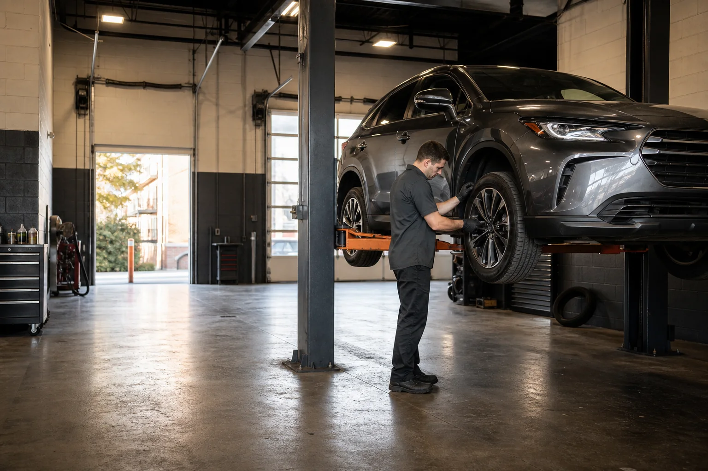

Diagnostics
Warning lights, strange noises, no-start problems, and difficult electrical issues.

Independent auto repair · East Boston
From routine maintenance to difficult diagnostics, we help you understand what your vehicle needs now, what can wait, and why.
Sample business information for demonstration only.
Popular services
We service most domestic, Asian, and European cars and light trucks. Every recommendation starts with an inspection and a clear explanation.
Warning lights, strange noises, no-start problems, and difficult electrical issues.
Brake inspections, pads, rotors, fluid service, and hydraulic repairs.
Oil service, factory-scheduled maintenance, filters, fluids, and tune-ups.
How we work
Photos, findings, and pricing are explained in plain language. We separate urgent safety needs from maintenance that can wait.
See our repair processCustomer perspective
Sample testimonials created for this demonstration. They are not real customer reviews.
★★★★★“They explained what needed attention now and what could wait. I never felt pressured, and the updates were clear.”
★★★★★“Booking was straightforward, the estimate matched the final bill, and the car was ready when promised.”
★★★★★“The inspection photos helped me understand the repair. This is what honest communication should look like.”
On a real client website, only shop-owner-approved testimonials from real customers would be added manually.
Ready when you are
Choose a service, explain what is happening, and preview a clear appointment-request experience.